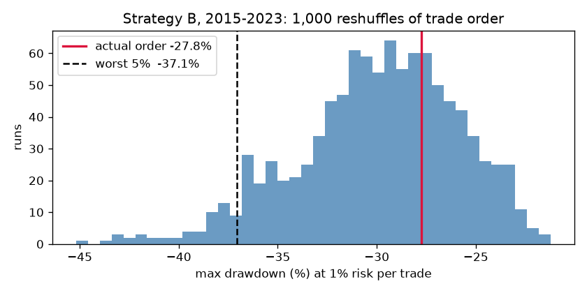

Project README · Strategy specs · Notebooks · Verdict (.md source) · requirements.txt
EURUSD Intraday Strategy Lab: Verdict
Bottom line: Neither strategy makes money after spreads. The only hint of an edge (mean reversion in the quiet Asia session) is smaller than the cost of trading it, and an ML filter did not change that. Recommendation: do not trade either strategy.
What was tested
- Data: EURUSD and GBPUSD 1-minute bars, 2015–2025 (HistData), converted to UTC and rolled up into 15m and 1h bars. Mar–Jul 2023 was excluded for both pairs because London and New York hours were about 50% missing.
- Rules written before coding (
reports/strategy_specs.md): fills at the next bar's open, 1.4 pips round-trip cost, 1% risk per trade, and stop checked first when one bar touches both stop and target. - Data split: build 2015–2021, validation 2022–2023, final test 2024–2025, used once.
- Strategy A, London breakout (15m): trade a 07:00–11:00 UTC close outside the Asia range, with stop 1×ATR, target 2×ATR, and an exit at 16:00 UTC.
- Strategy B, Asia mean reversion (1h): fade a close outside the Bollinger band between 00:00 and 06:00 UTC, with the target at the 20-bar average and an 8-bar limit. After tuning, the locked setup was band 1.5 and stop 2.0×ATR.
- Backtester checks: passed all 7 edge-case tests, including the same-bar stop and target case, gaps through the stop, and the time exit.
Results (R = profit per trade in units of the risked amount, after costs)
| Test | Trades | Avg R | ± noise | Avg R before costs |
|---|---|---|---|---|
| A, EURUSD 2015–21 (build) | 1,267 | −0.20 | ||
| A, EURUSD 2024–25 (final) | 343 | −0.18 | 0.08 | +0.00 |
| B, EURUSD 2015–21 (build, tuned) | 532 | −0.03 | +0.03 | |
| B, EURUSD 2024–25 (final) | 179 | +0.05 | 0.06 | +0.12 |
| B, GBPUSD 2024–25 (no retune) | 165 | −0.10 | 0.06 | −0.05 |
| B, GBPUSD 2015–23 (no retune) | 586 | −0.07 | 0.03 | −0.02 |
Strategy A: rejected
- It lost in every build year after costs, and in 6 of 7 years even before costs.
- All 9 stop and target combinations lost; the best was −0.14 R.
- On the final test it lost again (−0.18 R) and was flat before costs.
- In short, the breakout has no edge, and costs make it a steady loser.
Strategy B: no tradeable edge
- All 9 settings lost after costs in the build period.
- The final EURUSD test came out slightly positive (+0.05 R), but that sits inside its noise band (±0.06). Almost all of it came from 2024 (+0.10); 2025 was +0.01.
- It failed on GBPUSD without retuning (−0.10 R), where it was negative even before costs.
- A result that disappears on the closest similar pair is most likely luck, not an edge.
- Cost sensitivity on EURUSD 2024–25: +0.07 R at 1.0 pip, +0.05 at 1.4, and +0.02 at 2.0.
Where the edge lives (sessions)
Running B's logic in each session on 2015–2021, average R before costs was:
- Asia: +0.032 (noise ±0.035)
- Late: +0.020
- London: +0.006
- Overlap: −0.011
- New York: −0.018
After costs, every session was negative, between −0.03 and −0.07. Mean reversion only shows up in the quiet hours, when prices drift back to their average, but the move is smaller than the spread.
Did ML help? No
- Setup: a meta-labeling filter on B's trades (506 trades, 2015–2023). It used 7 features known at signal time and a year-by-year walk-forward from 2017.
- Logistic regression: threshold 0.55 was best on build (−0.007 R). On validation it showed +0.08 R, but over only 51 trades, with noise of about ±0.14. Threshold 0.50 gave −0.06 R on validation.
- Random forest: did not help.
- Verdict: no filter was adopted, and none was used in the final test.
Risk check (Monte Carlo)
- Build and validation (2015–2023): I shuffled the order of B's 654 trades 1,000 times at 1% risk per trade. The worst drop from a peak was −29.5% in a typical run and −37% in the unluckiest 5% of runs. The account ended down 21% whatever the order. Chart:
reports/monte_carlo_dd.png. - Final-test trades (2024–25): typical worst drop −8.3%, unluckiest 5% −12.5%, final equity +8.6%.
Caveats
- The costs are a flat 1.4 pips. Real spreads widen at night and around news, which would make B worse, since it trades in the Asia hours.
- HistData has no bid/ask quotes, so fills are mid-price plus a cost. Dukascopy bid/ask data would be the next upgrade.
- Mar–Jul 2023 is missing.
- No swap (overnight financing) costs; most trades close the same day.
What would change the verdict
Only a cheaper way to execute would change it: about 1 pip less cost would push B's build-period result to roughly breakeven. Alternatively, a new idea could be specified fresh and tested on data not used here. Re-tuning B on 2024–2025 would just be fitting to noise.
Data
1-minute EURUSD and GBPUSD bars, 2015–2025, from HistData. Notebook 01 loads EURUSD into a local PostgreSQL database (trading, table fx_m1); notebook 08 loads GBPUSD the same way. The raw CSVs are not included in this repository.
Rules
The rules were written down before any strategy code: strategy specs (.md source).
Charts

Notebooks
| Notebook | What it does | Links |
|---|---|---|
| 01_load_data | Reads the EURUSD M1 CSVs, converts them to UTC, removes duplicates, loads them into Postgres (fx_m1), checks coverage and flags Mar–Jul 2023 9 code cells, 9 with outputs | Rendered · .ipynb |
| 02_bars | Builds 15m and 1h bars with ATR(14) and session labels (fx_bars) 4 code cells, 4 with outputs | Rendered · .ipynb |
| 03_backtester | simulate_trade() and its 7 edge-case tests 3 code cells, 1 with outputs | Rendered · .ipynb |
| 04_strategy_a | Strategy A (London breakout): build-period run and 9-cell stop/target grid 8 code cells, 6 with outputs | Rendered · .ipynb |
| 05_strategy_b | Strategy B (Asia mean reversion): build-period run and 9-cell band/stop grid 6 code cells, 4 with outputs | Rendered · .ipynb |
| 06_ml_filter | Meta-labeling filter on Strategy B trades: logistic regression and random forest, walk-forward by year 6 code cells, 4 with outputs | Rendered · .ipynb |
| 07_sessions | Strategy B’s logic run in each trading session, 2015–2021 5 code cells, 2 with outputs | Rendered · .ipynb |
| 08_robustness | GBPUSD load, Monte Carlo reshuffle, and the one-time 2024–2025 final test 13 code cells, 10 with outputs, 1 chart | Rendered · .ipynb |
How to rerun: see the project README, requirements.txt and pyproject.toml.